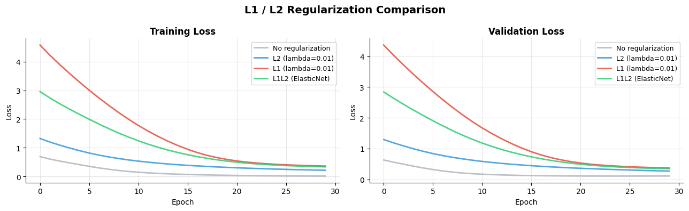
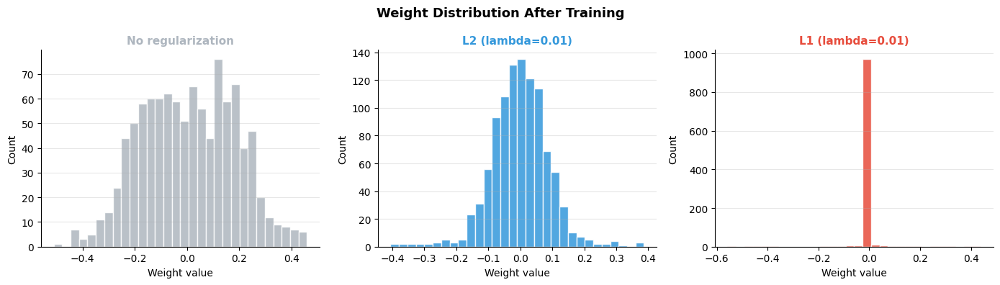
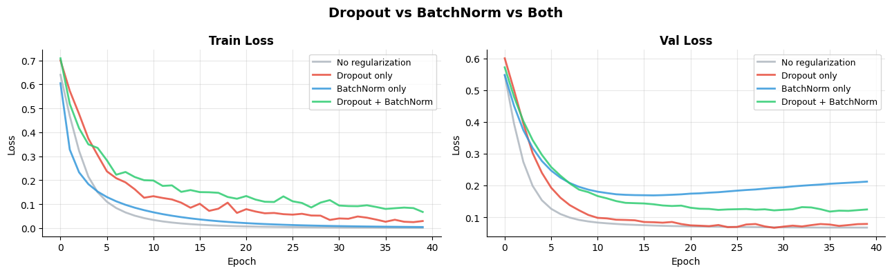
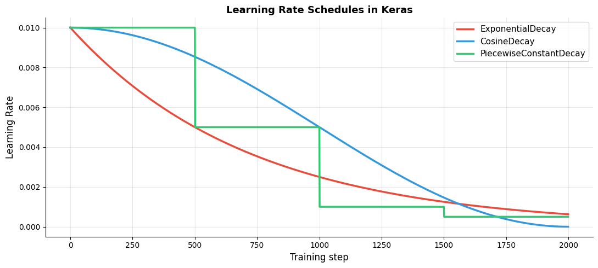
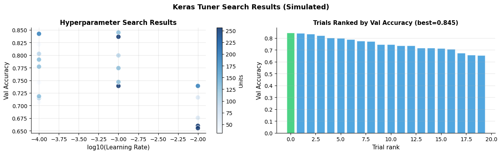

How do you regularize and tune models?#
Topics: L1/L2 Regularization · Dropout · BatchNormalization · Learning Rate Schedules · Keras Tuner Basics
1. L1 / L2 Regularization in Keras#
What it is#
Adds penalty on layer weights to the loss function
Applied directly in layer definition via
kernel_regularizerargumentL2 shrinks all weights toward zero; L1 drives some to exactly zero
When to use#
L2 → almost always — small performance boost for free
L1 → when you want sparse weights (rare in deep learning)
l1_l2— combine both (ElasticNet equivalent)
Gotchas#
Regularization strength
ldefault is 0.01 — start there and tuneApplied to kernel (weights) not bias by default
activity_regularizerpenalizes activations — less common
import tensorflow as tf
import numpy as np
import matplotlib.pyplot as plt
np.random.seed(42); tf.random.set_seed(42)
X = np.random.randn(500, 16).astype(np.float32)
y = (X[:, 0] + X[:, 1] > 0).astype(np.int32)
def build_model(regularizer=None):
return tf.keras.Sequential([
tf.keras.layers.Dense(64, activation='relu', input_shape=(16,),
kernel_regularizer=regularizer),
tf.keras.layers.Dense(32, activation='relu', kernel_regularizer=regularizer),
tf.keras.layers.Dense(1, activation='sigmoid'),
])
configs = [
(None, '#AEB6BF', 'No regularization'),
(tf.keras.regularizers.L2(0.01), '#3498DB', 'L2 (lambda=0.01)'),
(tf.keras.regularizers.L1(0.01), '#E74C3C', 'L1 (lambda=0.01)'),
(tf.keras.regularizers.L1L2(l1=0.005, l2=0.005), '#2ECC71', 'L1L2 (ElasticNet)'),
]
fig, axes = plt.subplots(1, 2, figsize=(13, 4))
for reg, color, label in configs:
model = build_model(reg)
model.compile(optimizer='adam', loss='binary_crossentropy')
history = model.fit(X[:400], y[:400], epochs=30, batch_size=32,
validation_data=(X[400:], y[400:]), verbose=0)
axes[0].plot(history.history['loss'], color=color, linewidth=2, label=label, alpha=0.85)
axes[1].plot(history.history['val_loss'], color=color, linewidth=2, label=label, alpha=0.85)
for ax, title in zip(axes, ['Training Loss', 'Validation Loss']):
ax.set_title(title, fontsize=12, fontweight='bold')
ax.set_xlabel('Epoch'); ax.set_ylabel('Loss')
ax.legend(fontsize=9); ax.grid(True, alpha=0.3)
ax.spines['top'].set_visible(False); ax.spines['right'].set_visible(False)
plt.suptitle('L1 / L2 Regularization Comparison', fontsize=14, fontweight='bold')
plt.tight_layout()
plt.savefig('tf_regularization.png', dpi=120, bbox_inches='tight')
plt.show()
# Show weight distribution: no reg vs L1 vs L2
fig, axes = plt.subplots(1, 3, figsize=(14, 4))
for ax, (reg, color, label) in zip(axes, configs[:3]):
m = build_model(reg)
m.compile(optimizer='adam', loss='binary_crossentropy')
m.fit(X[:400], y[:400], epochs=30, verbose=0)
weights = m.layers[0].get_weights()[0].ravel()
ax.hist(weights, bins=30, color=color, alpha=0.85, edgecolor='white')
ax.set_title(label, fontsize=11, fontweight='bold', color=color)
ax.set_xlabel('Weight value'); ax.set_ylabel('Count')
ax.grid(True, alpha=0.3, axis='y')
ax.spines['top'].set_visible(False); ax.spines['right'].set_visible(False)
plt.suptitle('Weight Distribution After Training', fontsize=13, fontweight='bold')
plt.tight_layout()
plt.savefig('weight_distributions.png', dpi=120, bbox_inches='tight')
plt.show()
WARNING: All log messages before absl::InitializeLog() is called are written to STDERR
I0000 00:00:1776953954.954400 13309 cudart_stub.cc:31] Could not find cuda drivers on your machine, GPU will not be used.
I0000 00:00:1776953955.000134 13309 cpu_feature_guard.cc:227] This TensorFlow binary is optimized to use available CPU instructions in performance-critical operations.
To enable the following instructions: AVX2 FMA, in other operations, rebuild TensorFlow with the appropriate compiler flags.
WARNING: All log messages before absl::InitializeLog() is called are written to STDERR
I0000 00:00:1776953956.543653 13309 cudart_stub.cc:31] Could not find cuda drivers on your machine, GPU will not be used.
E0000 00:00:1776953957.748407 13309 cuda_platform.cc:52] failed call to cuInit: INTERNAL: CUDA error: Failed call to cuInit: UNKNOWN ERROR (303)
/opt/hostedtoolcache/Python/3.11.15/x64/lib/python3.11/site-packages/keras/src/layers/core/dense.py:107: UserWarning: Do not pass an `input_shape`/`input_dim` argument to a layer. When using Sequential models, prefer using an `Input(shape)` object as the first layer in the model instead.
super().__init__(activity_regularizer=activity_regularizer, **kwargs)


2. Dropout & BatchNormalization#
Dropout#
tf.keras.layers.Dropout(rate)— zeros random fraction of inputs during trainingrate=0.3to0.5for Dense layers,0.1to0.2for Conv layersAutomatically disabled during
model.predict()andmodel.evaluate()
BatchNormalization#
tf.keras.layers.BatchNormalization()— normalizes per channel across batchAccelerates training, allows higher learning rates, mild regularization effect
Place before activation:
Dense → BN → ReLU
BN + Dropout interaction#
Using both together can be counterproductive — BN reduces need for Dropout
Common practice: use BN in all layers, Dropout only in final Dense layers
Gotchas#
Dropout after BN can interfere — BN statistics are computed on full activations
BN has trainable
gamma,betaand non-trainablemoving_mean,moving_varianceFreezing a BN layer: set
layer.trainable = False— uses fixed running stats
import tensorflow as tf
import numpy as np
import matplotlib.pyplot as plt
np.random.seed(42); tf.random.set_seed(42)
X = np.random.randn(800, 16).astype(np.float32)
y = (X[:, 0] + X[:, 1] > 0).astype(np.int32)
def build(use_dropout, use_bn, dropout_rate=0.4):
layers = [tf.keras.layers.Dense(128, input_shape=(16,))]
if use_bn: layers.append(tf.keras.layers.BatchNormalization())
layers.append(tf.keras.layers.Activation('relu'))
if use_dropout: layers.append(tf.keras.layers.Dropout(dropout_rate))
layers += [tf.keras.layers.Dense(64)]
if use_bn: layers.append(tf.keras.layers.BatchNormalization())
layers.append(tf.keras.layers.Activation('relu'))
if use_dropout: layers.append(tf.keras.layers.Dropout(dropout_rate))
layers.append(tf.keras.layers.Dense(1, activation='sigmoid'))
m = tf.keras.Sequential(layers)
m.compile(optimizer='adam', loss='binary_crossentropy', metrics=['accuracy'])
return m
configs = [
(False, False, '#AEB6BF', 'No regularization'),
(True, False, '#E74C3C', 'Dropout only'),
(False, True, '#3498DB', 'BatchNorm only'),
(True, True, '#2ECC71', 'Dropout + BatchNorm'),
]
fig, axes = plt.subplots(1, 2, figsize=(13, 4))
for dropout, bn, color, label in configs:
m = build(dropout, bn)
h = m.fit(X[:640], y[:640], epochs=40, batch_size=32,
validation_data=(X[640:], y[640:]), verbose=0)
axes[0].plot(h.history['loss'], color=color, linewidth=2, label=label, alpha=0.85)
axes[1].plot(h.history['val_loss'], color=color, linewidth=2, label=label, alpha=0.85)
for ax, title in zip(axes, ['Train Loss', 'Val Loss']):
ax.set_title(title, fontsize=12, fontweight='bold')
ax.set_xlabel('Epoch'); ax.set_ylabel('Loss')
ax.legend(fontsize=9); ax.grid(True, alpha=0.3)
ax.spines['top'].set_visible(False); ax.spines['right'].set_visible(False)
plt.suptitle('Dropout vs BatchNorm vs Both', fontsize=14, fontweight='bold')
plt.tight_layout()
plt.savefig('dropout_bn.png', dpi=120, bbox_inches='tight')
plt.show()

3. Learning Rate Schedules#
What it is#
Adjusts learning rate during training according to a schedule
In Keras: pass a schedule object to optimizer’s
learning_rateargumentOr use
ReduceLROnPlateaucallback for adaptive scheduling
Common schedules#
Schedule |
Pattern |
When to use |
|---|---|---|
|
Smooth exponential decrease |
General use |
|
Cosine curve decay |
CV, transformers |
|
Step drops at fixed epochs |
ResNet training |
|
Warmup then cosine |
Transformers |
Gotchas#
Schedules update LR per step (batch) by default — not per epoch
decay_stepsis in number of batches — compute asn_epochs * steps_per_epochVerbose LR tracking: use
tf.keras.callbacks.LearningRateSchedulerfor per-epoch control
import tensorflow as tf
import numpy as np
import matplotlib.pyplot as plt
# Visualize learning rate schedules
steps = np.arange(0, 2000)
initial_lr = 0.01
exp_decay = tf.keras.optimizers.schedules.ExponentialDecay(
initial_learning_rate=initial_lr, decay_steps=500, decay_rate=0.5)
cosine_decay = tf.keras.optimizers.schedules.CosineDecay(
initial_learning_rate=initial_lr, decay_steps=2000)
piecewise = tf.keras.optimizers.schedules.PiecewiseConstantDecay(
boundaries=[500, 1000, 1500], values=[0.01, 0.005, 0.001, 0.0005])
exp_lrs = [exp_decay(s).numpy() for s in steps]
cosine_lrs = [cosine_decay(s).numpy() for s in steps]
piecewise_lrs = [piecewise(s).numpy() for s in steps]
fig, ax = plt.subplots(figsize=(11, 5))
ax.plot(steps, exp_lrs, color='#E74C3C', linewidth=2.5, label='ExponentialDecay')
ax.plot(steps, cosine_lrs, color='#3498DB', linewidth=2.5, label='CosineDecay')
ax.plot(steps, piecewise_lrs, color='#2ECC71', linewidth=2.5, label='PiecewiseConstantDecay')
ax.set_xlabel('Training step', fontsize=12)
ax.set_ylabel('Learning Rate', fontsize=12)
ax.set_title('Learning Rate Schedules in Keras', fontsize=13, fontweight='bold')
ax.legend(fontsize=11); ax.grid(True, alpha=0.3)
ax.spines['top'].set_visible(False); ax.spines['right'].set_visible(False)
plt.tight_layout()
plt.savefig('lr_schedules.png', dpi=120, bbox_inches='tight')
plt.show()
# Define schedule separately — call the schedule directly, not through the optimizer
schedule = tf.keras.optimizers.schedules.ExponentialDecay(
initial_learning_rate=1e-3, decay_steps=1000, decay_rate=0.96
)
# Correct: call schedule(step) directly
print(f"LR at step 0 : {schedule(0).numpy():.6f}")
print(f"LR at step 1000: {schedule(1000).numpy():.6f}")
print(f"LR at step 2000: {schedule(2000).numpy():.6f}")
# Pass schedule to optimizer
optimizer_with_schedule = tf.keras.optimizers.Adam(learning_rate=schedule)
print(f"Optimizer LR type: {type(optimizer_with_schedule.learning_rate)}")

LR at step 0 : 0.001000
LR at step 1000: 0.000960
LR at step 2000: 0.000922
Optimizer LR type: <class 'tensorflow.python.framework.ops.EagerTensor'>
4. Keras Tuner Basics#
What it is#
Library for automated hyperparameter search
Defines a search space, then searches for best combination
Works with any Keras model
Search strategies#
RandomSearch— random sampling of search spaceHyperband— efficient adaptive search (recommended)BayesianOptimization— probabilistic search
Key intuition#
Define a model-building function that takes
hp(hyperparameter) argumentUse
hp.Int(),hp.Float(),hp.Choice()to define search rangesTuner tries combinations and picks the best
Gotchas#
Keras Tuner requires separate install:
pip install keras-tunermax_trialscontrols how many combinations to tryUse
HyperbandoverRandomSearchfor efficiency — early stops bad trials
# Keras Tuner reference patterns
# Requires: pip install keras-tuner
print("=== Keras Tuner Pattern ===")
print()
print("1. Define model-building function:")
print("import keras_tuner as kt")
print()
print("def build_model(hp):")
print(" model = tf.keras.Sequential()")
print(" model.add(tf.keras.layers.Dense(")
print(" units=hp.Int('units_1', min_value=32, max_value=256, step=32),")
print(" activation='relu', input_shape=(16,)")
print(" ))")
print(" model.add(tf.keras.layers.Dropout(")
print(" rate=hp.Float('dropout', min_value=0.1, max_value=0.5, step=0.1)")
print(" ))")
print(" model.add(tf.keras.layers.Dense(1, activation='sigmoid'))")
print(" model.compile(optimizer='adam', loss='binary_crossentropy', metrics=['accuracy'])")
print(" return model")
print("2. Create tuner and search:")
print("tuner = kt.Hyperband(build_model, objective='val_accuracy', max_epochs=20,")
print(" directory='kt_results', project_name='my_model')")
print("tuner.search(X_train, y_train, epochs=20, validation_data=(X_val, y_val),")
print(" callbacks=[tf.keras.callbacks.EarlyStopping(patience=3)])")
print("3. Get best model:")
print("best_hps = tuner.get_best_hyperparameters(1)[0]")
print("best_model = tuner.get_best_models(1)[0]")
print("print(f'Best units: {best_hps.get(chr(39)+chr(117)+chr(110)+chr(105)+chr(116)+chr(115)+chr(95)+chr(49)+chr(39)}')")
import numpy as np
import matplotlib.pyplot as plt
# Simulate hyperparameter search results
np.random.seed(42)
n_trials = 20
lrs = np.random.choice([0.01, 0.001, 0.0001], n_trials)
units = np.random.choice([32, 64, 96, 128, 192, 256], n_trials)
val_accs = 0.7 + 0.15 * np.random.rand(n_trials) - 0.05*(lrs > 0.005).astype(float)
val_accs = np.clip(val_accs, 0.65, 0.92)
fig, axes = plt.subplots(1, 2, figsize=(13, 4))
sc1 = axes[0].scatter(np.log10(lrs), val_accs, c=units, cmap='Blues', s=80, alpha=0.85, edgecolors='white')
axes[0].set_xlabel('log10(Learning Rate)', fontsize=11)
axes[0].set_ylabel('Val Accuracy', fontsize=11)
axes[0].set_title('Hyperparameter Search Results', fontsize=12, fontweight='bold')
plt.colorbar(sc1, ax=axes[0], label='Units')
axes[0].grid(True, alpha=0.3)
axes[0].spines['top'].set_visible(False); axes[0].spines['right'].set_visible(False)
best_idx = np.argmax(val_accs)
sorted_accs = np.sort(val_accs)[::-1]
axes[1].bar(range(n_trials), sorted_accs, color=['#2ECC71' if i==0 else '#3498DB' for i in range(n_trials)],
alpha=0.85, edgecolor='white')
axes[1].set_xlabel('Trial rank', fontsize=11); axes[1].set_ylabel('Val Accuracy', fontsize=11)
axes[1].set_title(f'Trials Ranked by Val Accuracy (best={sorted_accs[0]:.3f})', fontsize=11, fontweight='bold')
axes[1].grid(True, alpha=0.3, axis='y')
axes[1].spines['top'].set_visible(False); axes[1].spines['right'].set_visible(False)
plt.suptitle('Keras Tuner Search Results (Simulated)', fontsize=13, fontweight='bold')
plt.tight_layout()
plt.savefig('keras_tuner.png', dpi=120, bbox_inches='tight')
plt.show()
=== Keras Tuner Pattern ===
1. Define model-building function:
import keras_tuner as kt
def build_model(hp):
model = tf.keras.Sequential()
model.add(tf.keras.layers.Dense(
units=hp.Int('units_1', min_value=32, max_value=256, step=32),
activation='relu', input_shape=(16,)
))
model.add(tf.keras.layers.Dropout(
rate=hp.Float('dropout', min_value=0.1, max_value=0.5, step=0.1)
))
model.add(tf.keras.layers.Dense(1, activation='sigmoid'))
model.compile(optimizer='adam', loss='binary_crossentropy', metrics=['accuracy'])
return model
2. Create tuner and search:
tuner = kt.Hyperband(build_model, objective='val_accuracy', max_epochs=20,
directory='kt_results', project_name='my_model')
tuner.search(X_train, y_train, epochs=20, validation_data=(X_val, y_val),
callbacks=[tf.keras.callbacks.EarlyStopping(patience=3)])
3. Get best model:
best_hps = tuner.get_best_hyperparameters(1)[0]
best_model = tuner.get_best_models(1)[0]
print(f'Best units: {best_hps.get(chr(39)+chr(117)+chr(110)+chr(105)+chr(116)+chr(115)+chr(95)+chr(49)+chr(39)}')

Interview Q&A#
What hyperparameters should you tune first?
Learning rate — most impactful
Number of layers and units per layer
Dropout rate
Batch size (indirectly via LR scaling)
Keras Tuner vs manual grid search?
Grid search is O(n^k) — exponential in number of hyperparameters
Hyperband stops bad trials early — much more efficient
Bayesian optimization is best when evaluations are expensive
Gotchas#
Always use a validation set separate from test set for tuning
Refit best model on full train+val data after tuning
Watch for overfitting to the validation set with many trials